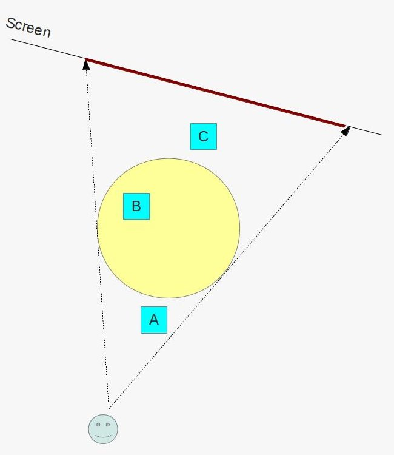
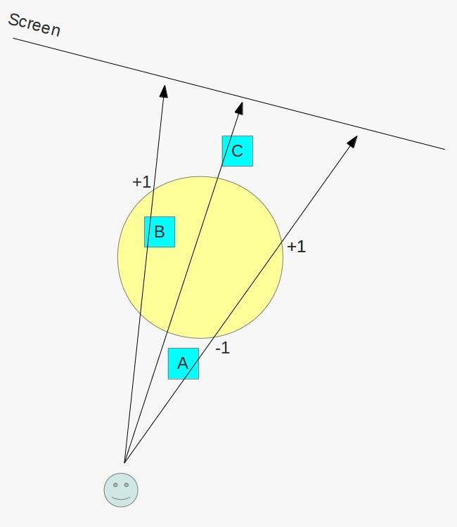
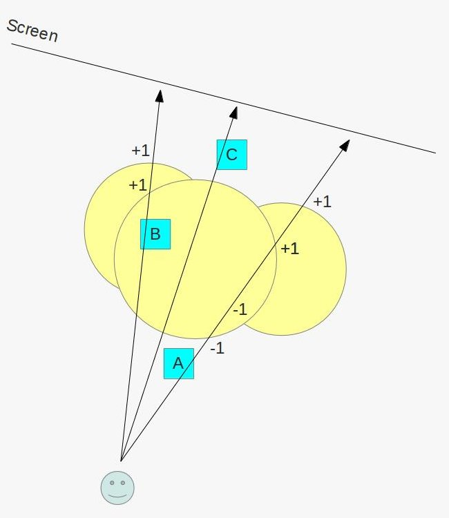

Background
Our implementation of deferred shading may seem ok right now, but when looking closely you can see a couple of problems that were mentioned at the end of the previous tutorial. The first one is that due to back face culling the light disappears as soon as the camera enters the light volume. The second problem is related to bounding the area effected by the light. The thing is that since we are selecting the pixels to do lighting calculations on by drawing up a sphere around the light source and that sphere gets projected to screen space before rasterization, every pixel covered by the sphere in screen space enters the calculation, even if it is very far away (and effectively outside the light volume).
What helps us solve these problems is a feature of OpenGL known as the Stencil Buffer. The stencil buffer lives side by side with the color and depth buffer and shares their resolution (for every pixel in the color buffer there is a pixel in the stencil buffer). The type of a pixel in the stencil buffer is an integer and it is usually one byte in width. The stencil buffer serves roughly the same purpose as stencil paper in the real world. A stencil paper is usually used to print letters or any other type of design by having the desired pattern cut into the paper itself. In OpenGL the stencil buffer can be used to limit the pixels where the pixel shader is executed.
The stencil buffer is connected with the Stencil Test which is a per-fragment operation we are seeing here for the first time. In a similar manner to the depth test, the stencil test can be used to discard pixels prior to pixel shader execution. It works by comparing the value at the current pixel location in the stencil buffer with a reference value. There are several comparison functions available:
- Always pass
- Always fail
- Less/greater than
- Less/greater than or equal
- Equal
- Not equal
Based on the result of both the stencil test as well as the depth test you can define an action known as the stencil operation on the stored stencil value. The following operations are available:
- Keep the stencil value unchanged
- Replace the stencil value with zero
- Increment/decrement the stencil value
- Invert the bits of the stencil value
You can configure different operations for each of the following cases:
- Stencil test failure
- Depth test failure
- depth test success
In addition, you can configure different stencil tests and stencil operations for the two faces of each polygon. For example, you can set the comparison function for the front face to be 'Less Than' with a reference value of 3 while the comparison function for the back face is 'Equal' with a reference value of 5. The same goes for the stencil operation.
This, in a nutshell, is the stencil test. So how can it help us solve the above problems? Well, we are going to take advantage of the ability to increment and decrement the stencil value based on the result of the depth test on the front and back faces of the polygons. Consider the following picture:
The picture shows 3 objects - A, B and C and a yellow sphere that is centered on a light source. The sphere gets projected on the virtual screen and according to the previous tutorial we need to render the light volume and for each rasterized pixel calculate the lighting effect. It is very simple to see that while the entire red line (in reality this is a rectangle because we are looking down at the scene) will reach the fragment shader only a very small subset of it is really relevant because only object B is inside the light volume. Both A and C are outside of it and there are many pixels in the G buffer that don't contain any data at all because there is no object along the way.
The way we are going to use the stencil buffer to limit the lighting calculations only to the pixels covered by object B is based on the same concept used in a shadowing technique known as Stencil Shadow Volumes (which will be covered by dedicated tutorial sometime in the future...). Our technique is based on the following interesting property which is evident in the picture above: when we look at the sphere from the camera point of view both its front and back face polygons are behind object A, the same polygons are infront of object C but in the case of object B the front face polygons are infront of it but the back face polygons are behind it. Let's see how we can take advantage of it in the context of the stencil test.
The techique works as follows:
- Render the objects as usual into the G buffer so that the depth buffer will be properly populated.
- Disable writing into the depth buffer. From now on we want it to be read-only
- Disable back face culling. We want the rasterizer to process all polygons of the sphere.
- Set the stencil test to always succeed. What we really care about is the stencil operation.
- Configure the stencil operation for the back facing polygons to increment the value in the stencil buffer when the depth test fails but to keep it unchanged when either depth test or stencil test succeed.
- Configure the stencil operation for the front facing polygons to decrement the value in the stencil buffer when the depth test fails but to keep it unchanged when either depth test or stencil test succeed.
- Render the light sphere.
Let's see the effect of the above scheme on the picture above:
The picture shows three example vectors from the camera to the screen that cross both the sphere and one of the objects. Each vector is representative for all pixels covered by that particular object. Since the geometry was already rendered and the depth buffer is populated we can check what happens to the depth test when the vector goes through the front and back pixels of the sphere and update the stencil buffer accordingly. In the case of object A both the front and the back pixels fail the depth test. The back face pixel increments the stencil value but this is nullified by the front pixel which decrements it. In the case of object C both the front and back pixels win the depth test so the stencil value remains unchanged. Now pay attention to what happens to object B - the front face pixel wins the depth test but the back face pixel fails it. This means that we increment the value by one.
This is the core of the technique. We render the geometry into the G buffer, setup the stencil test/operation according to the above and then render the bounding sphere of each light into the stencil buffer. The peculiar stencil setup that we saw guarantees that only the pixels in the stencil buffer covered by objects inside the bounding sphere will have a value greater than zero. We call this step the Stencil Pass and since we are only interested in writing into the stencil buffer we use a null fragment shader. Next we render the sphere again using the lighting fragment shader but this time we configure the stencil test to pass only when the stencil value of the pixel is different from zero. All the pixels of objects outside the light volume will fail the stencil test and we will calculate lighting on a very small subset of the pixels that are actually covered by the light sphere.
Let's see another example, this time with more light sources:
As you can see, the logic still works (the case when the camera is inside the light source is left as an exercise for the reader).
One last note about the stencil buffer - it is not a separate buffer but actually part of the depth buffer. You can have depth/stencil buffer with 24 or 32 bits for depth and 8 bits for stencil in each pixel.
Source walkthru
(tutorial37.cpp:149)
virtual void RenderSceneCB()
{
CalcFPS();
m_scale += 0.05f;
m_pGameCamera->OnRender();
m_gbuffer.StartFrame();
DSGeometryPass();
// We need stencil to be enabled in the stencil pass to get the stencil buffer
// updated and we also need it in the light pass because we render the light
// only if the stencil passes.
glEnable(GL_STENCIL_TEST);
for (unsigned int i = 0 ; i < ARRAY_SIZE_IN_ELEMENTS(m_pointLight); i++) {
DSStencilPass(i);
DSPointLightPass(i);
}
// The directional light does not need a stencil test because its volume
// is unlimited and the final pass simply copies the texture.
glDisable(GL_STENCIL_TEST);
DSDirectionalLightPass();
DSFinalPass();
RenderFPS();
glutSwapBuffers();
}
The piece of code above is the main render function with changes from the previous tutorial marked in bold. The first change is the call to the StartFrame() API of the GBuffer class. The GBuffer becomes quite complex in this tutorial and needs to be informed about the start of a new frame (changes to this class will be reviewed later but for now we'll just mention that we are not rendering directly to the screen but to an intermediate buffer which will be copied to the main FBO). Next we enable the stencil test because we need it for the two upcoming passes. Now comes the most important change - for each light we do a stencil pass (which marks the relevant pixels) followed by a point light pass which depends on the stencil value. The reason why we need to handle each light source separately is because once a stencil value becomes greater than zero due to one of the lights we cannot tell whether another light source which also overlaps the same pixel is relevant or not.
After we finish with all the point lights we disable the stencil test because for a directional light we need to process all pixels anyway. The last change in the function is the final pass which is also a new pass required due to the complexity of the GBuffer class.
(tutorial37.cpp:185)
void DSGeometryPass()
{
m_DSGeomPassTech.Enable();
m_gbuffer.BindForGeomPass();
// Only the geometry pass updates the depth buffer
glDepthMask(GL_TRUE);
glClear(GL_COLOR_BUFFER_BIT | GL_DEPTH_BUFFER_BIT);
glEnable(GL_DEPTH_TEST);
Pipeline p;
p.SetCamera(m_pGameCamera->GetPos(), m_pGameCamera->GetTarget(), m_pGameCamera->GetUp());
p.SetPerspectiveProj(m_persProjInfo);
p.Rotate(0.0f, m_scale, 0.0f);
for (unsigned int i = 0 ; i < ARRAY_SIZE_IN_ELEMENTS(m_boxPositions) ; i++) {
p.WorldPos(m_boxPositions[i]);
m_DSGeomPassTech.SetWVP(p.GetWVPTrans());
m_DSGeomPassTech.SetWorldMatrix(p.GetWorldTrans());
m_box.Render();
}
// When we get here the depth buffer is already populated and the stencil pass
// depends on it, but it does not write to it.
glDepthMask(GL_FALSE);
}
There are minor changes in the geometry pass. The function GBuffer::BindForWriting() has been renamed GBuffer::BindForGeomPass(). In addition, those of you with a sharp eye will notice that we no longer disabling blending and the depth test. Both of these items are now manipulated elsewhere.
(tutorial37.cpp:215)
void DSStencilPass(unsigned int PointLightIndex)
{
m_nullTech.Enable();
// Disable color/depth write and enable stencil
m_gbuffer.BindForStencilPass();
glEnable(GL_DEPTH_TEST);
glDisable(GL_CULL_FACE);
glClear(GL_STENCIL_BUFFER_BIT);
// We need the stencil test to be enabled but we want it
// to succeed always. Only the depth test matters.
glStencilFunc(GL_ALWAYS, 0, 0);
glStencilOpSeparate(GL_BACK, GL_KEEP, GL_INCR_WRAP, GL_KEEP);
glStencilOpSeparate(GL_FRONT, GL_KEEP, GL_DECR_WRAP, GL_KEEP);
Pipeline p;
p.WorldPos(m_pointLight[PointLightIndex].Position);
float BBoxScale = CalcPointLightBSphere(m_pointLight[PointLightIndex].Color,
m_pointLight[PointLightIndex].DiffuseIntensity);
p.Scale(BBoxScale, BBoxScale, BBoxScale);
p.SetCamera(m_pGameCamera->GetPos(), m_pGameCamera->GetTarget(), m_pGameCamera->GetUp());
p.SetPerspectiveProj(m_persProjInfo);
m_nullTech.SetWVP(p.GetWVPTrans());
m_bsphere.Render();
}
Now comes the real meat - the stencil pass. Let's review it step by step. We start by enabling the null technique. This is an extremely simple technique. The VS includes only a transformation of the position vector by the WVP matrix and the FS is empty. We don't need anything in the FS because we are not updating the color buffer at all. Only the stencil buffer is updated so we just need something to drive rasterization. We bind the GBuffer for this pass and enable the depth test. We will later see that the point light pass disable the depth test but we need it here because the stencil operation depends on it. Next we disable culling because we want to process both the front and back faces of each polygon. After that we clear the stencil buffer and setup the stencil test to always pass and the stencil operation according to the description in the background section. Everything after that is as usual - we render the bounding sphere based on the light params. When we are done the stencil buffer contains positive values only in the pixels of objects inside the light volume. We can now do lighting calculations.
(tutorial37.cpp:246)
void DSPointLightPass(unsigned int PointLightIndex)
{
m_gbuffer.BindForLightPass();
m_DSPointLightPassTech.Enable();
m_DSPointLightPassTech.SetEyeWorldPos(m_pGameCamera->GetPos());
glStencilFunc(GL_NOTEQUAL, 0, 0xFF);
glDisable(GL_DEPTH_TEST);
glEnable(GL_BLEND);
glBlendEquation(GL_FUNC_ADD);
glBlendFunc(GL_ONE, GL_ONE);
glEnable(GL_CULL_FACE);
glCullFace(GL_FRONT);
Pipeline p;
p.WorldPos(m_pointLight[PointLightIndex].Position);
float BBoxScale = CalcPointLightBSphere(m_pointLight[PointLightIndex].Color,
m_pointLight[PointLightIndex].DiffuseIntensity);
p.Scale(BBoxScale, BBoxScale, BBoxScale);
p.SetCamera(m_pGameCamera->GetPos(), m_pGameCamera->GetTarget(), m_pGameCamera->GetUp());
p.SetPerspectiveProj(m_persProjInfo);
m_DSPointLightPassTech.SetWVP(p.GetWVPTrans());
m_DSPointLightPassTech.SetPointLight(m_pointLight[PointLightIndex]);
m_bsphere.Render();
glCullFace(GL_BACK);
glDisable(GL_BLEND);
}
Same as the other passes the point light pass starts by setting up the G buffer for what it needs (by calling GBuffer::BindForLightPass()). It sets up the stencil test to pass when the stencil value is not equal to zero. After that it disables the depth test (because we don't need it and on some GPUs we may get some performance by disabling it) and enable blending as usual. The next step is very important - we enable culling of the front face polygons. The reason why we do that is because the camera may be inside the light volume and if we do back face culling as we normally do we will not see the light until we exit its volume. After that we render the bounding sphere as usual.
The directional light pass is pretty much the same as before so we won't review it.
(tutorial37.cpp:296)
void DSFinalPass()
{
m_gbuffer.BindForFinalPass();
glBlitFramebuffer(0, 0, WINDOW_WIDTH, WINDOW_HEIGHT,
0, 0, WINDOW_WIDTH, WINDOW_HEIGHT, GL_COLOR_BUFFER_BIT, GL_LINEAR);
}
In the final pass we blit from the color buffer inside the G Buffer into the screen. This is a good place to discuss why we added an intermediate color buffer in the G Buffer instead of rendering directly to the screen. The thing is that our G Buffer combines as a target the buffers for the attributes with the depth/stencil buffer. When we run the point light pass we setup the stencil stuff and we need to use the values from the depth buffer. Here we have a problem - if we render into the default FBO we won't have access to the depth buffer from the G Buffer. But the G Buffer must have its own depth buffer because when we render into its FBO we don't have access to the depth buffer from the default FBO. Therefore, the solution is to add to the G Buffer FBO a color buffer to render into and in the final pass blit it to the default FBO color buffer. This is the final pass above.
(gbuffer.h:23)
class GBuffer
{
public:
enum GBUFFER_TEXTURE_TYPE {
GBUFFER_TEXTURE_TYPE_POSITION,
GBUFFER_TEXTURE_TYPE_DIFFUSE,
GBUFFER_TEXTURE_TYPE_NORMAL,
GBUFFER_NUM_TEXTURES
};
GBuffer();
~GBuffer();
bool Init(unsigned int WindowWidth, unsigned int WindowHeight);
void StartFrame();
void BindForGeomPass();
void BindForStencilPass();
void BindForLightPass();
void BindForFinalPass();
private:
GLuint m_fbo;
GLuint m_textures[GBUFFER_NUM_TEXTURES];
GLuint m_depthTexture;
GLuint m_finalTexture;
};
We've added a final texture to the GBuffer class for the color and reshuffled the API quite a bit since the last tutorial. Let's review the changes.
(gbuffer.cpp:52)
bool GBuffer::Init(unsigned int WindowWidth, unsigned int WindowHeight)
{
...
glGenTextures(1, &m_finalTexture);
...
// depth
glBindTexture(GL_TEXTURE_2D, m_depthTexture);
glTexImage2D(GL_TEXTURE_2D, 0, GL_DEPTH32F_STENCIL8, WindowWidth, WindowHeight, 0, GL_DEPTH_STENCIL,
GL_FLOAT_32_UNSIGNED_INT_24_8_REV, NULL);
glFramebufferTexture2D(GL_FRAMEBUFFER, GL_DEPTH_STENCIL_ATTACHMENT, GL_TEXTURE_2D, m_depthTexture, 0);
// final
glBindTexture(GL_TEXTURE_2D, m_finalTexture);
glTexImage2D(GL_TEXTURE_2D, 0, GL_RGBA, WindowWidth, WindowHeight, 0, GL_RGB, GL_FLOAT, NULL);
glFramebufferTexture2D(GL_FRAMEBUFFER, GL_COLOR_ATTACHMENT4, GL_TEXTURE_2D, m_finalTexture, 0);
...
}
When we initialize the G Buffer we need to allocate one more texture for the final texture. The final texture is attached to attachment point number 4. The depth texture is no longer created with type GL_DEPTH_COMPONENT32F. Instead we create it as GL_DEPTH32F_STENCIL8. This leave a full byte for the stencil value in each pixel. This depth buffer is attached to GL_DEPTH_STENCIL_ATTACHMENT instead of GL_DEPTH_COMPONENT.
(gbuffer.cpp:97)
void GBuffer::StartFrame()
{
glBindFramebuffer(GL_DRAW_FRAMEBUFFER, m_fbo);
glDrawBuffer(GL_COLOR_ATTACHMENT4);
glClear(GL_COLOR_BUFFER_BIT);
}
At the start of each frame we need to clear the final texture which is attached to attachment point number 4.
(gbuffer.cpp:105)
void GBuffer::BindForGeomPass()
{
glBindFramebuffer(GL_DRAW_FRAMEBUFFER, m_fbo);
GLenum DrawBuffers[] = { GL_COLOR_ATTACHMENT0,
GL_COLOR_ATTACHMENT1,
GL_COLOR_ATTACHMENT2 };
glDrawBuffers(ARRAY_SIZE_IN_ELEMENTS(DrawBuffers), DrawBuffers);
}
Previously the FBO in the G Buffer was static (in terms of its configuration) and was set up in advance so we just had to bind it for writing when the geometry pass started. Now we keep changing the FBO to we need to config the draw buffers for the attributes each time.
(gbuffer.cpp:117)
void GBuffer::BindForStencilPass()
{
// must disable the draw buffers
glDrawBuffer(GL_NONE);
}
As mentioned earlier, in the stencil test we are not writing to the color buffer, only the stencil buffer. Indeed, even our FS is empty. However, in that case the default output color from the FS is black. In order to avoid garbaging the final buffer with a black image of the bounding sphere we disable the draw buffers here.
(gbuffer.cpp:125)
void GBuffer::BindForLightPass()
{
glDrawBuffer(GL_COLOR_ATTACHMENT4);
for (unsigned int i = 0 ; i < ARRAY_SIZE_IN_ELEMENTS(m_textures); i++) {
glActiveTexture(GL_TEXTURE0 + i);
glBindTexture(GL_TEXTURE_2D, m_textures[GBUFFER_TEXTURE_TYPE_POSITION + i]);
}
}
The light pass is straightforward. We set the target to be the final buffer and bind the attribute buffers as a source.
(gbuffer.cpp:136)
void GBuffer::BindForFinalPass()
{
glBindFramebuffer(GL_DRAW_FRAMEBUFFER, 0);
glBindFramebuffer(GL_READ_FRAMEBUFFER, m_fbo);
glReadBuffer(GL_COLOR_ATTACHMENT4);
}
When we get to the final pass our final buffer is populated with the final image. Here we set things up for the blitting that takes place in the main application code. The default FBO is the target and the G Buffer FBO is the source.
This tutorial completes our introduction to deferred shading. It is definitely not the only "right way" to do it and you can find alternatives on the web but the core concepts are probably common. Like everything is life, it has its advantages and disadvantages. In future tutorials we will spend time on both forward and deferred rendering and improve their frameworks with new features.